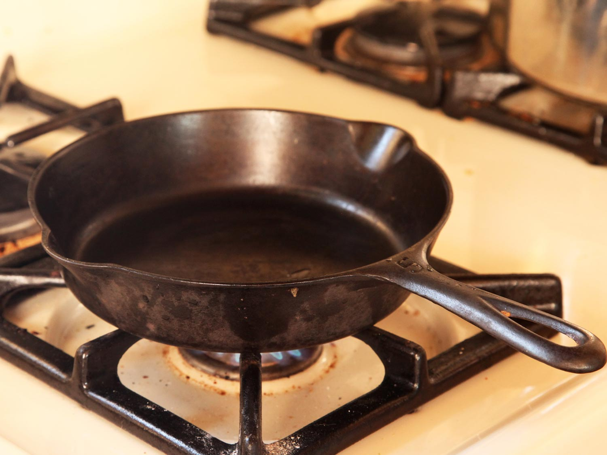
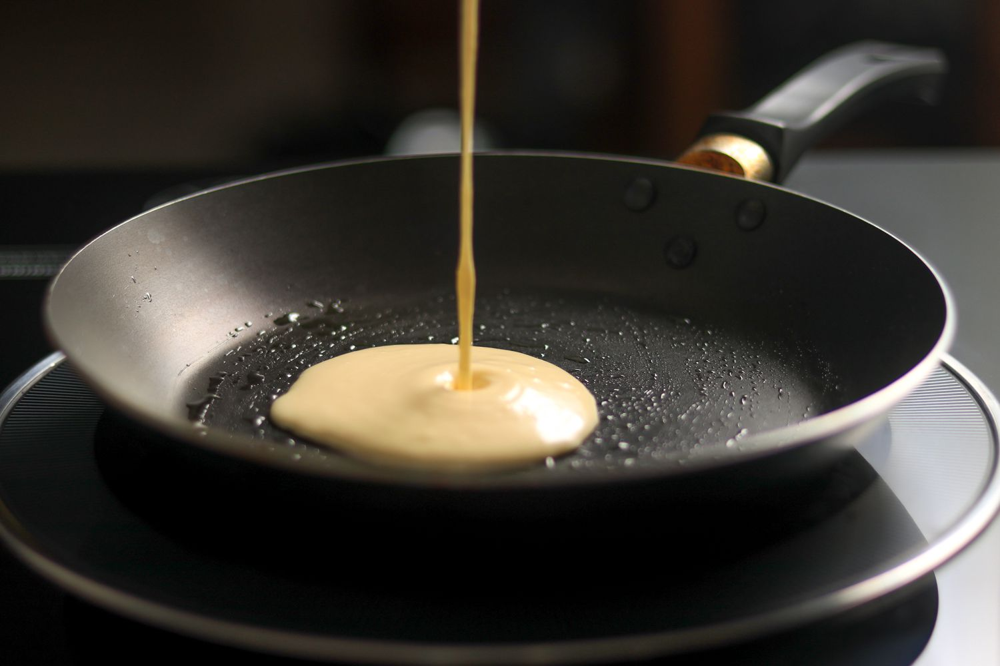
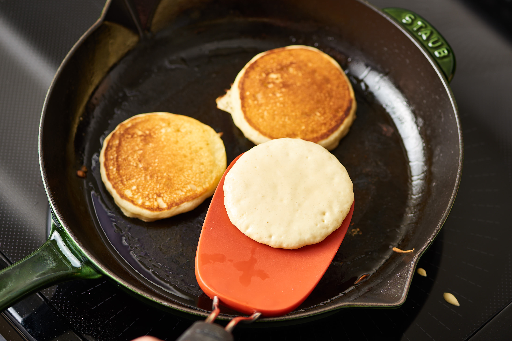
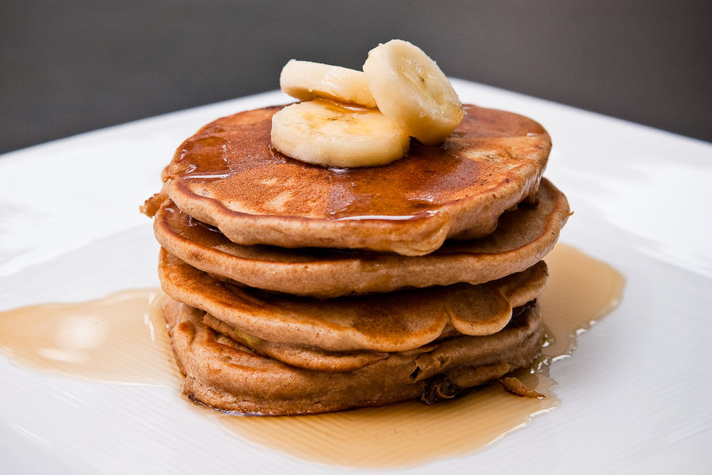

Combine together the flour, sugar (or sweetener), baking powder, baking soda and salt in a large-sized bowl. Make a well in the centre and add the milk, slightly cooled melted butter, vanilla and egg.

Use a wire whisk to whisk the wet ingredients together first before slowly folding them into the dry ingredients. Mix together until smooth.

Set the batter aside and allow to rest while heating up your pan or griddle.
Heat a nonstick pan or griddle over low-medium heat and wipe over with a little butter to lightly grease pan. Pour ¼ cup of batter onto the pan and spread out gently into a round shape with the back of your ladle or measuring cup.
When the underside is golden and bubbles begin to appear on the surface, flip with a spatula and cook until golden. Repeat with remaining batter.
Serve with honey, maple syrup, fruit, ice cream or frozen yogurt, or enjoy plain!
Ingredients
- 2 cups all purpose | plain flour
- 1/4 cup granulated sugar or sweetener
- 4 teaspoons baking powder
- 1/4 teaspoon baking soda
- 1/2 teaspoon salt
- 1 1/2 cups milk (plus up to 1/4 cup extra if needed)
- 1/4 cup butter , melted
- 2 teaspoons pure vanilla extract
- 1 large egg